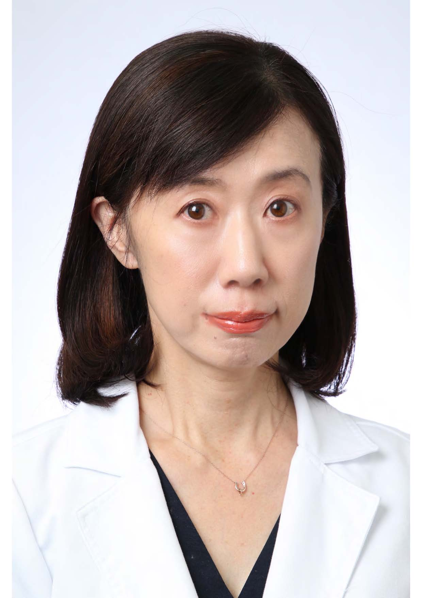
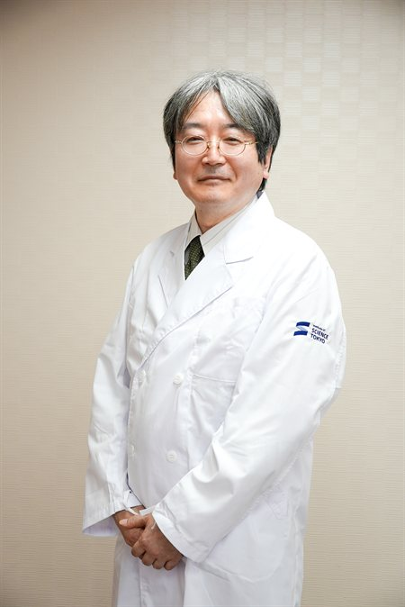
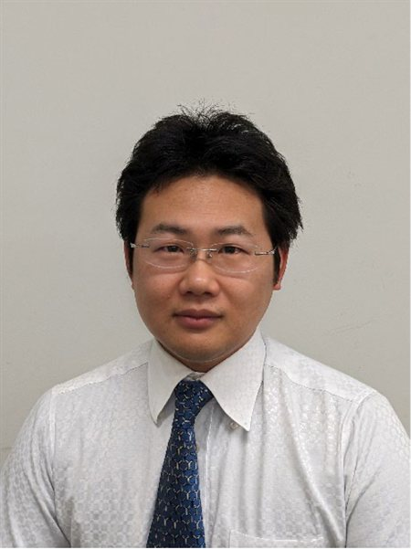

STAFF
Staff
Principal Investigator Professor & Lab Director

Koji Sasaki, MD, PhD
Professor, Department of Laboratory Medicine / Faculty of Medicine, Institute of Science Tokyo
I am committed to overcoming hematologic malignancies, working at the intersection of clinical practice and research.
After graduating from Tokyo Medical and Dental University, I completed my residency in hematology at the same institution before moving to the United States. Following an internal medicine residency in New York, I undertook specialized fellowship training in leukemia, hematopoietic stem cell transplantation and cellular therapy, and hematologic oncology at MD Anderson Cancer Center beginning in 2013, and have served on the faculty of the Department of Leukemia since 2017, engaged in both clinical care and research.
Hematologic malignancies are among the fields where our understanding of disease mechanisms and the development of new treatments have advanced the furthest. Recent progress in molecular-targeted therapies and cellular therapies has brought new hope to many patients. By deepening our understanding of the pathobiology of leukemia and lymphoma and translating that knowledge into new treatments, I hope to help pave the way toward overcoming cancer.
I look forward to working together with like-minded colleagues across research, education, and clinical practice to help realize better healthcare for all.
Members
ASSOCIATE PROFESSOR

Ayako Nogami, MD, PhD
Associate Professor, Department of Laboratory Medicine
LECTURER

Tadashi Kanouchi, MD, PhD
Lecturer, Department of Laboratory Medicine
ASSISTANT PROFESSOR

Satoru Watanabe, PhD
Assistant Professor, Department of Laboratory Medicine